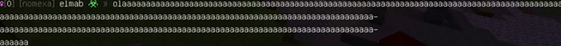
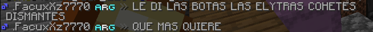

(Discord y Minecraft) Este es el nuevo formato de sanciones para el servidor REDMC®. Ahora les mostraremos que comportamientos deben de ser sancionados o reportados por todos los miembros del @staffteam. Este “nuevo” formato estará organizada de la siguiente forma:
SANCION → Acá estará el nombre de la sanción. En el momento de sancionar a un usuario debes de adjuntar este nombre.
• Descripción: Acá daremos una corta descripción sobre lo necesario para sancionar al usuario.
• Ejemplo: Acá adjuntaremos una pequeña captura relacionada con la sanción.
• Niveles de sanción: Aquí mostraremos los tiempos de sanción.
(Minecraft)
A continuación, se detallan las sanciones más comunes y leves. Para cada una, se proporcionará una breve descripción y el período de tiempo correspondiente a su aplicación.
SANCION → Flood
Descripción: Si un usuario coloca
letras sin sentido y/o excede los 8 caracteres será sancionado (Un
ejemplo podría ser: “kskdakwddj”, un holaaaaa, no será
sancionable)
Ejemplo: 
Niveles de sanción:
#1 ➨ Warn |
#2 y #3 ➨ Mute 1h |
#4 - #10 ➨ Mute 2h |
#11 - #20 ➨ Mute 5h |
#21 - #∞ ➨ Mute 12h |
SANCION → Exceso de mayúsculas
descripción: Solo será sancionado
si el mensaje contiene un 70% de mayúsculas (Si el usuario lo hace solo
una vez no será sancionado, la sanción será aplicada después de exceder
las mayúsculas en más de 2 mensajes)
Ejemplo: 
Niveles de sanción:
#1➨ Warn |
#2 y #3 ➨Mute 1h |
#4 - #7 ➨Mute 3h |
#8 - #9 ➨Mute 5h |
#10-∞ ➨ Mute 1d |
Sanción → Spam
Descripción: Si un usuario repite
el mismo mensaje una y otra vez es considerado spam (Si el usuario
repite el mismo mensaje un total de 4 veces será sancionado)
Ejemplo:
Niveles de sanción:
#1 ➨ Warn |
#2 y #3 ➨ Mute 1h |
#4 - #10 ➨ Mute 2h |
#11 - #20 ➨ Mute 5h |
#21 - #∞ ➨ Mute 12h
Sanción → Toxicidad
Descripción: Si el usuario o los
usuarios empiezan a insultar con palabras fuertes, (“wey”, “nmms” no son
tan fuertes). Si se trata de una discusión primero se intentará
calmarlos, si continúan con el conflicto serán sancionados.
Ejemplo:
Niveles de sanción:
#1 ➨ Warn |
#2 y #3 ➨ Mute 1h |
#4 - #10 ➨ Mute 3h |
#11 - #20 ➨ Mute 12h |
#21 - #40 ➨ Ban 1d |
#41 - ➨Mute Perma
Todas estas sanciones son las más frecuentes y deben de ser sancionadas, pero primero se debe de dar una advertencia por el chat (ejemplo: “Oye”JUGADOR”, evita el spam). Todo el staff esta encargado de sancionar estas conductas, desde los Low Staff hasta los High Staff y Head Staff.
A continuación, pasaremos a otra” sección” de las sanciones.
SANCION → Faltas de respeto al
Staff
Descripción: Hacer burlas, insultos o
crear rumores del staff.
Ejemplo:
Niveles de sanción:
#1 ➨ Mute 7h |
#2 y #3 ➨ Mute 12h |
#4 - #7 ➨ Mute 1d |
#8 - #∞ ➨ Ban 3d |
SANCION → Mentir al Staff
descripción: Si el usuario miente
sobre otro jugador con el fin de dañarlo será sancionado. (No importa
que sea en tono de broma, será sancionado igual.)
Ejemplo:
Niveles de sanción:
#1 ➨ Warn |
#2 y #3 ➨ Ban 3d |
#4 - #7 ➨ Ban 7d |
#8 - #∞ ➨ Ban 15d |
SANCION → Suplantar identidad del
Staff
Descripción: Si un usuario miente sobre tener acceso a los comandos de moderación, tener un rango dentro del staff (Soporte, helper, moderador, etc.) o/y directamente hacerse pasar por algún moderador será sancionado. (Sin importar que sea en tono de broma debe de ser sancionado.)
Ejemplo:
Niveles de sanción:
#1 ➨ban 3d |
#2 y #3 ➨ Ban 10d |
#4 - #7 ➨ Ban 30d |
#8 - #∞ ➨ Ban 60d |
Estas son las sanciones relacionadas al Staff, de igual forma que todas las sanciones antes mostradas deben de ser sancionadas por igual. (Aquí se sancionan directamente, no importa si el comentario fue en tono humorístico.)
Ahora te mostraremos cuales son las sanciones un poco “más graves”.
SANCION → Uso de modificaciones
ilegales
descripción: El uso de
modificaciones como hacks, x-ray o alguna otra modificación que otorgue
una gran ventaja sobre otros usuarios será sanción inmediata,
(Obviamente con sus pruebas correspondientes).
Ejemplo:
Niveles de sanción:Admitir uso de
Hacks ➨ Ban de 15 días |
Uso de Hacks obvios ➨ Ban de 30 días |
Uso de Hacks en SS (Solo hacemos SS en JAVA) ➨ Ban de 60 días |
SANCION → Estafa
Descripción: El uso de engaños para
vender objetos, kits o/y bases será sancionado. (Si se realiza un
rollback o algo similar al usuario afectado dependerá totalmente de los
Head Staff)
Ejemplo:
Niveles de sanción:
#1 ➨ Ban 2d |
#2 y #3 ➨ Ban 5d |
#4 - #7 ➨ Ban 7d |
#8 - #∞ ➨ Ban 15d |
SANCION → Tpakill
Descripción: Utilizar el comando
/tpa para matar a otros jugadores de forma injustificada será
completamente sancionable
Ejemplo:
Niveles de sanción:
#1 ➨ Ban 1d |
#2 y #3 ➨ Ban 2d |
#4 - #7 ➨ Ban 5d |
#8 - #∞ ➨ Ban 10d |
SANCION → FarmKill
Descripción: Atraer a otros jugadores
con estafas y/o tratos (Regalar dinero, cosas dentro del juego o
cualquier otra cosa), será sancionado (No importa que el jugador
afectado estuviera de acuerdo)
Ejemplo:
Niveles de sanción:
#1 ➨ Ban 1d |
#2 - #10 ➨ Ban 3d |
#11 - #∞ ➨ Ban 5d |
SANCION → Hostigamiento
Descripción; el hecho de acosar de
cualquier forma a un usuario, mencionar información privada de un
usuario y/o utilizar comandos para molestar será sancionado. (Colocar
letreros y construcciones cuentan igual)
Ejemplo:
Niveles de sanción:
#1 ➨ Ban 1d |
#2 y #3 ➨ Ban 2d |
#4 - #7 ➨ Ban 3d |
#8 - #∞ ➨ Ban 5d |
Estas sanciones no sueles ser tan comunes, pero aun así debes de conocer acerca de estas y sancionarlas en caso de que sucedan.
Ahora pasaremos a sanciones que pueden afectar directamente a la Network.
SANCION → Mencionar servidores
externos
Descripción: Mencionar servidores
externos a Red-MC será completamente sancionable (No importa que la
mención ocurra por MD)
Ejemplo:
Tiempo de sanción:
#1 ➨ Warn |
#2 -#3 ➨ Mute 7d |
#4 ➨ Mute 15d |
#5 ➨ Ban 15d |
#6 ➨ Ban permanente |
SANCION → Pasar IP externa
Descripción: Colocar el IP de un
servidor externo es completamente sancionable, no importa el motivo por
el que fue colocado, debe de ser sancionado
Ejemplo:
Niveles de sanción:
#1 ➨ Muteo Permanente
SANCION → Granjas de lag
descripción: Construir granjas que
causen lag dentro del servidor será sancionable
Ejemplo:
Niveles de sanción:
#1 ➨ Warn |
#2 y #3 ➨ Ban 7d |
#4 ➨ Ban 21d |
#5 ➨ Ban PERMANENTE |
SANCION → Griffing
Descripción: Destruir bases o
saquearlas, (Solo aplica si la bese estaba protegida por una
protección)
Ejemplo:
Niveles de sanción:
#1 ➨ Ban 2d |
#2 y #3 ➨ Ban 5d |
#4 - #7 ➨ Ban 7d |
#8 - #∞ ➨ Ban 14d |
SANCION → Griffing outside
Descripción: Destruir el alrededor
de una base y/o protección. (Si no se encuentra cercas de alguna
protección no será sancionable)
Ejemplo:
Niveles de sanción:
}#1 ➨ Ban 2d |
#2 y #3 ➨ Ban 5d |
#4 - #7 ➨ Ban 7d |
#8 - #∞ ➨ Ban 14d |
SANCION → 𝐑. 𝐈𝐧𝐚𝐝𝐞𝐜𝐮𝐚𝐝𝐨 𝐝𝐞 𝐈𝐭𝐞𝐦𝐬
Descripción: Hacer referencias
sexuales, sustancias ilegales, racismo, homofobia y/o delicadas
(Terrorismo, holocausto, etc.) será sancionado
Ejemplo:
Niveles de sanción:
#1 ➨ Warn |
#2 y #3 ➨ Ban 1d |
#4 - #7 ➨ Ban 5d |
#8 - #∞ ➨ Ban 10d |
SANCION → 𝐒𝐤𝐢𝐧 𝐲/o 𝐍𝐢𝐜𝐤 𝐈𝐧𝐚𝐩𝐫𝐨𝐩𝐢𝐚𝐝𝐨
Descripción: Toda referencia
delicada, sexual o cualquier cosa por el estilo será sancionada
Ejemplo:
Niveles de sanción:
#1 ➨ Ban PERMANENTE (hasta retirar Skin o cambiar de cuenta)
SANCION → 𝐂𝐨𝐧𝐬𝐭𝐫𝐮𝐜𝐜𝐢𝐨𝐧𝐞𝐬
𝐈𝐧𝐚𝐝𝐞𝐜𝐮𝐚𝐝𝐚𝐬
Descripción:
Referencias sexuales, delicadas (Terrorismo, holocausto, etc.)
Ejemplo:
Niveles de sanción:
#1 ➨ Ban 1d |
#2 y #3 ➨ Ban 3d |
#4 - #10 ➨ Ban 5d |
#11 - # ➨ Ban 10d
SANCION → 𝐃𝐚𝐧̃𝐨𝐬 𝐚 𝐥𝐚 𝐍𝐞𝐭𝐰𝐨𝐫𝐤
Descripción: Cualquier ataque de
cualquier tipo, dañar la reputación de la network y un largo etcétera
será completamente sancionable (Estas sanciones serán impuestas solo por
un High-Staff o Head-Staff)
Ejemplo:
Niveles de sanción:
#1 ➨ Ban PERMANENTE
SANCION → 𝐀𝐦𝐞𝐧𝐚𝐳𝐚𝐬 𝐝𝐞 𝐃𝐨𝐱𝐱𝐢𝐧𝐠
Descripción: Amenazar con filtrar
información personal y/o privada es completamente sancionable (No
importa si estos comentarios fueron hechos en tono de broma)
Ejemplo:
Niveles de sanción:
#1 ➨ Ban 1d |
#2 y #3 ➨ Ban 2d |
#4 - #7 ➨ Ban 3d |
#8 - #∞ ➨ Ban 10d |
SANCION → 𝐃𝐨𝐱𝐱𝐢𝐧𝐠
Descripción: Filtrar información
privada, (cara, nombres, residencia, etc.) será sancionado de
inmediato
Ejemplo:
Niveles de sanción:
#1 ➨ Baneo PERMANENTE
Ahora pasaremos a otra sección, la última, pero no menos importante.
SANCION → 𝐁𝐮𝐠 𝐀𝐛𝐮𝐬𝐞
Descripción: Abusar de un Bug y no
notificarlo al staff será sancionable
Ejemplo:
Niveles de sanción:
#1 ➨ ban 2d |
#2 y #3 ➨ Ban 5d |
#4 - #7 ➨ Ban 10d |
#8 - #∞ ➨ Ban 30d |
SANCION → 𝐈𝐭𝐞𝐦𝐬 𝐃𝐮𝐩𝐞
Descripción: Utilizar un item
duplicado será sancionable
Ejemplo:
Niveles de sanción:
#1 ➨ Warn |
#2 y #3 ➨ Ban 1d |
#4 - #7 ➨ Ban 10d |
#8 - #∞ ➨ Ban 30d |
SANCION → 𝐃𝐮𝐩𝐞𝐚𝐫
Descripción: Duplicar cualquier
item será sanción imediata
Ejemplo:
Niveles de sanción:
#1 ➨ Ban PERMANENTE
SANCION → 𝐄𝐯𝐚𝐝𝐢𝐫 𝐒𝐚𝐧𝐜𝐢𝐨́𝐧
Descripción: Crear una multicuenta
con el fin de evadir un ban, mute y/o warn será sancionable
Ejemplo:
Niveles de sanción:
#1 y #2 ➨ Misma sanción que la cuenta original |
#3➨ Ban-ip por el tiempo restante de la sanción|
Recuerden adjuntar las pruebas junto al reporte, de lo contrario puedes ser sancionado e incluso obtener un demote. Otra cosa de igual o mayor importancia es el hecho de sancionar correctamente, en caso de que las sanciones sean otorgadas erróneamente será motivo para restarte puntos en el “STOW” y el “STOM” e incluso en algunos casos obtener un demote directamente.
En caso de no encontrar lo que necesitas en este formulario, no se especifique bien o sea un caso extraordinario no dudes en preguntar por el canal #Preguntas siguiendo su respectiva plantilla.
Recuerden utilizar el comando /history (Jugador) antes de aplicar una sanción.
Por último, no olviden que este formato puede ser actualizado cada cierto tiempo. Gracias por tu atención.